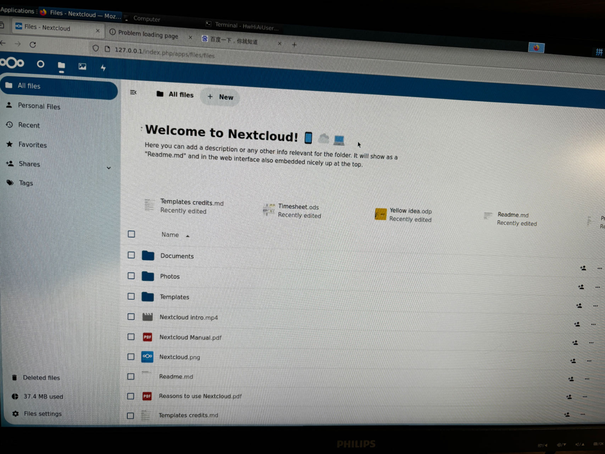

随着数字化时代的到来，数据的存储和管理变得愈发重要。相比于公共云存储服务，搭建一个属于自己的个人云盘不仅能够更好地保护隐私，还可以更灵活地管理数据。
近期刚好收到了一个 香橙派 AIpro 的开发板，借此机会用来搭建一个属于自己的个人云盘，实在是很开心、很实用。
本文将带你一步步在 Orange Pi 上搭建属于你的个人云盘，让你随时随地访问和管理自己的数据。
1. 准备工作
在开始之前，准备以下材料：
- 一台 OrangePi（型号可以根据需求选择，本次选择的是 Orange Pi AIpro）
- 一个 32G 的 SD 卡
- 一个 SD 卡读卡器
- 电源适配器
- 键盘、鼠标
- 一个 USB 硬盘或大容量 U 盘（用于存储数据）
下面是 OrangePi 的开箱图和组装图：
2. 开发板介绍
Orange Pi AI Pro 开发板是香橙派联合华为精心打造的高性能 AI 开发板，其搭载了昇腾 AI 处理器，可提供 8TOPS INT8 的计算能力，内存提供了 8GB 和 16GB 两种版本。可以实现图像、视频等多种数据分析与推理计算，可广泛用于教育、机 器人、无人机等场景。
这次作为搭建个人云盘是否会大材小用呢，个人觉得只要充分发挥它的价值，把它应用在实际场景中，就能体现出它的价值所在。
对于初次接触开发板的小白而言，面对开发板上的芯片、接口等肯定会不知所措，无从下手。值得庆幸的是官方提供的文档很详细，图文并貌，能够轻松上手。

3. 系统烧录
系统烧录，是指将系统镜像烧录到 TF 卡中，然后通过 SD 卡启动系统。
我选择的是 ubuntu 22.04 桌面版本，在自己的 Macbook（arm64）上进行烧录。
-
ubuntu 镜像地址：https://pan.baidu.com/s/1csbugZiKsuL_NHCOmyi1BA?pwd=ma6z#list/path=%2F
-
烧录工具下载地址：https://github.com/balena-io/etcher/releases/download/v1.19.21/balenaEtcher-darwin-arm64-1.19.21.zip
解压烧录工具 zip 包，执行 balenaEtcher。
将镜像烧写到 TF 卡过程如下：
-
从文件烧录：将下载到本地的镜像（img.xz）进行解压，选择从文件烧录的是解压后的镜像 img 文件。
-
选择目标磁盘：将要烧写的 TF 卡，切记不要选择错了。
-
烧录：需要管理员权限，记得进行相关确认。整个烧录过程耗时较长，预计25分钟，请耐心等待。
-
烧录验证：烧录完成后，进行校验，确保烧录的系统没有问题。
-
烧录成功。
4. 开机启动
原本以为开机环节很麻烦，但是发现其实并不复杂，只需将烧录好的 TF 卡插入到开发板对应的插槽，将控制启动设备的两个拨码开关拨到 TF 卡方式启动， 插好电源和键盘鼠标即可开机。
控制启动设备的两个拨码开关：参考用户手册的 “2.3. 控制启动设备的两个拨码开关的使用说明“ 章节。
插好烧录好的 TF卡，上电，成功开机。
密码：Mind@123
环境配置：
-
网络配置：直接通过 WiFi 方式连接网络。
-
配置检查：检查系统内存、磁盘等基本信息。
5. 搭建云盘
Nextcloud 是一个开源的云存储服务，可以让你快速便捷地搭建一套属于自己或团队的云同步网盘，从而实现跨平台跨设备文件同步、共享、版本控制、团队协作等功能。
本次就采用 Nextcloud 来搭建个人云盘，使用 snap 来安装 Nextcloud，步骤如下：
-
安装 Nextcloud。
sudo snap install nextcloud -
确认安装过程是否成功。
通过列出与快照相关的更改来确认安装过程是否成功。
snap changes nextcloud -
局域网访问测试。
访问 http://127.0.0.1, 出现 Nextcloud 界面表示成功。
注意：首次安装需要创建设置管理员账号：用户名和密码，设置完成点击安装即可。

-
修改实际 IP 访问。
为确保非本地访问，需通过实际IP访问。
实际IP访问时，会出现如下错误提示：
根据报错里的提示来找到文件 config.php：
# 查找文件 config.php find / -name "config.php" # 我的环境config.php文件在如下目录 vi /var/snap/nextcloud/42896/nextcloud/config/config.php找到 trusted_domains 的配置项，将 127.0.0.1 地址替换成实际的IP地址即可。
重启 Nextcloud 服务（
snap restart nextcloud），立即生效。
到此为止，搭建成功。
后续可考虑通过内网穿透将支持公网访问。
6. 总结
至此，已经成功在 OrangePi AIpro 上搭建了个人云盘。通过 Nextcloud 的 Web 界面、移动端实现文件的同步、共享。这样，你就拥有了一个私人、可扩展的云存储解决方案。
搭建个人云盘的整体过程相对简单，OrangePi 作为硬件平台，性能稳定，能够满足家庭 NAS 的基本需求。配置完成后，日常使用中基本无需过多维护，使用体验良好。
作为一名资深开发者，非常高兴的能够接触到这个 OrangePi 开发板，未来会继续探索更多的应用场景，作为日常生活、开发中的工具。
关于开发板和个人云盘的详细总结体验如下：
6.1 开发板使用总结
-
易用性
官方文档很详细，容易上手。配置简单，安装方便。开发板接口很丰富，支持很多常见接口，如千兆网口、USB、Type-C、WiFi、蓝牙等，属于开箱即可用的开发板。
-
负载能力
OrangePi 的性能虽然不及高端服务器，但对于家庭 NAS 用途足够胜任。使用 Nextcloud 进行文件存储和小规模的文件共享是完全没问题的。在进行文件上传、下载以及媒体流播放时，OrangePi 的 CPU 利用率会有所上升，但仍能保持较为流畅的操作体验。
-
散热能力
OrangePi 开发板具有非常高的散热能力，可以满足大多数家庭 NAS 的需求。在长时间运行下，OrangePi 的温度会略有上升，尤其是在进行大文件传输或高负载操作时。建议使用更大的散热片或风扇进行辅助散热，以确保系统稳定运行。
-
噪音能力
OrangePi 本身没有活动部件，因此在正常运行时是完全静音的。如果使用外部风扇，噪音水平取决于风扇的质量和速度。一般来说，小型风扇的噪音是可以接受的，不会对日常生活造成明显影响。
6.2 个人云盘使用总结
在实际使用中，OrangePi 搭建的 NAS 系统表现令人满意。以下是一些具体的使用感受：
-
文件访问速度
在局域网内访问文件速度较快，上传下载速度基本能够满足日常需求。使用Nextcloud客户端可以方便地同步文件。
-
多设备支持
Nextcloud支持多种设备访问，包括Windows、Mac、Linux、Android和iOS设备。可以随时随地访问你的文件，非常方便。
-
数据安全性
可以通过设置用户权限和加密来保护你的数据安全。定期备份也很重要，可以使用外部硬盘或其他NAS设备进行备份。
-
拓展性
Nextcloud支持多种插件和应用，可以根据需要扩展功能，如日历、联系人管理、在线文档编辑等。
参考：